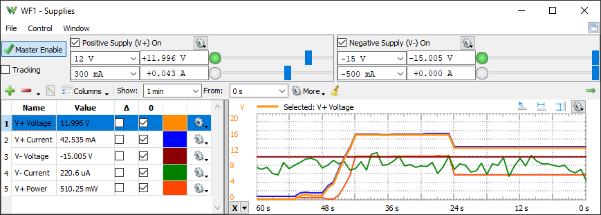

Power Supplies – Analog Discovery Studio Max
This instrument has two main areas: the control area and the plot window.
The control area contains power supplies with adjustable voltage and current.

See Menu in Common Interfaces.
The control area lets you adjust the settings for the various voltmeters and power supplies.
- Master Enable: the master ON/OFF switch for the power supplies and reference voltages.
- Tracking: when checked the voltage and current settings for the positive and negative supplies will be identical.
- On/Off: enable switches for each supply.
- Voltage and current fields: let you adjust the values for the power supplies by either selecting a value from combo box, or typing it in, or adjusting with the slider.
Next to the adjustment fields, the voltage/current reading is shown.
The gear dropdown contains the following:
- Lets you set Minimum and Maximum limits for voltage and current adjustment.
- Soft: lets you adjust slew rate as full-scale adjustment time.
The history plot has the following components:
- Add: opens a window. Select an item from the list and press the Add button (or double-click) to add it to the plot list. Using the function field, a custom math channel can be created.
- Remove the selected item(s) from the list.
- Edit the currently selected list item.
- Columns: enables or disables columns displaying the average, minimum and maximum levels from the history.
- Show: specifies the time span for the plot.
- From: specifies the start time for the plot.
More
- History specifies the time span for the capture.
- Steps specifies the capture steps.
- Update specifies the update rate.
- Time selects Right to Left or opposite horizontal axis.
- Clear: clear the history.
For each channel, the color and scaling option can be specified: auto scaling based on the extremes from the plot history or manually specified offset and range.
See Script in Common interfaces. The local variables are the elementary logger channels, which vary depending on the device.
Example functions:
- VPVoltage * VPCurrent
- VPVoltage - VNVoltage
For more information see Analog Discovery Studio Max.